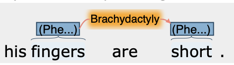
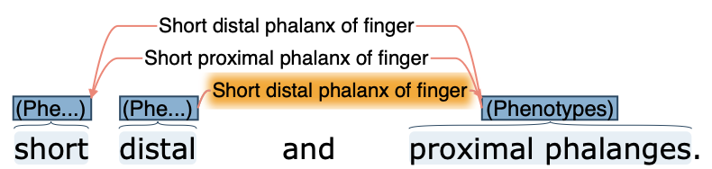
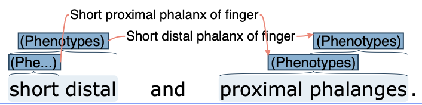
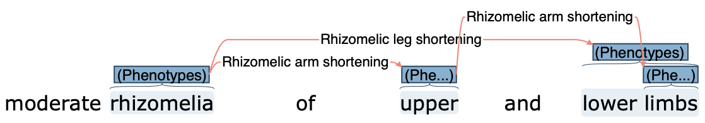

Annotation guidelines
To ensure consistency and reproducibility of the annotating process, the following annotation guidelines were established:
Only annotate abnormal phenotypes (e.g. do not annotate ‘normal intelligence’, or ‘no kidney anomalies were found’).
Annotate all occurrences of an abnormal phenotype, even if the same abnormality is mentioned multiple times
If an entity is a discontinuous text span, connect its components with arrows on the relations layer and label the relation with the corresponding HPO term




If a phenotype description includes multiple anatomical sites: (e.g. ‘short second and third fingers’) the whole text span is highlighted as a single concept but connected to each specific HPO term (e.g. ‘short second and third fingers’ → ‘short second finger’ and ‘short third finger’).
ExceptionIf the phenotype description involves a form of fusion between multiple anatomical sites (e.g. ‘2-5 finger syndactyly’) a single HPO term covering these multiple sites was used or created (e.g. ‘2-5 finger syndactyly’ → ‘syndactyly of the 2-5 finger’) :::
Ignore modifiers such as time, severity, and laterality.
Interpret seemingly normal features as abnormal, assuming the author would otherwise not have mentioned them.
Examplee.g. ‘hands are flexible’: author probably means more flexible than usual, therefore annotate as ‘hypermobility’)
Ignore phenotypes requiring interpretation to determine normality, unless clearly stated as abnormal
Examplee.g. ‘neck holding achieved at 4 months of age’ should not be annotated, as it would require knowledge of when neck holding is normally achieved to determine if this is normal or not. But ‘delayed neck holding at 4 months’ should be annotated, as ‘delayed’ indicates that it is considered an abnormal phenotype).
Same applies for measurements (e.g. weight, height, walking distances, blood glucose levels etc., such measurements usually require comparison to a reference range to determine if they are normal or abnormal. They should only be annotated if labelled as abnormal in the text.
Stop words (e.g.
with,of,a,the) can be included in the annotation text span.
For the task of linking an annotated text span to an HPO term, the following guidelines were applied:
Use the most specific HPO term.
If a phenotype description in the text is unclear, refer to the photos in the article to better understand what the author is referring to.
Be aware that phenotypes that are expressed in the text as an inability to do something are usually described in the HPO as an observable abnormality (e.g. ‘cannot extend elbow’ =
elbow flexion contracture (HP:0002987)).Annotate phenotypes with additional details with a more general HPO term if the additional details are not important enough to warrant creating a more specific HPO term (e.g. ‘cystic hygroma with multiple septations’: use ‘cystic hygroma’).
The HPO tries to avoid ‘bundled phenotypes’, i.e. terms that combine multiple phenotypes into a single term (e.g. ‘oligosyndactyly’, ‘stocky build’). According to HPO guidelines, these should be annotated with their individual phenotypes (e.g. ‘oligosyndactyly’ -> ‘oligodactyly (HP:xxx)’ and ‘syndactyly (HP:xxx);’ ‘stocky build’ -> ‘short stature (HP:xxx)’ and ‘overweight (HP:xxx)’.
This is not consistently applied in the HPO.If a bundled term already exists in the HPO, it should be used (e.g. ‘low-set posteriorly rotated ears’ -> use ‘low-set posteriorly rotated ears (HP:0000368) instead of ‘Low-set ears HP:0000369’ and ‘Posteriorly rotated ears HP:0000358’).
For decomposed phenotypes with multiple arrows, the HPO term should be added to the relation between quality and entity.
Examplesecond -> finger -> clinodactyly (HPO term between finger and clinodactyly).
Specific bones were connected if the specific term existed in the HPO (e.g. ‘tibial angulation’). Generic processes were not annotated with specific bones, as location is deemed inferior (e.g. ‘subperiostal bone formation’).
Spelling errors and abbreviations were commented on and annotated if understood.
Unlinked phenotypes
An ‘unlinked phenotype’ is a text span describing a phenotype that could not be linked to an existing HPO term. When a phenotype could not be linked to an HPO term, there were three main causes identified:
Missing term in HPO, requiring a request.
Use of outdated HPO version (2024-02-08 Release), while the most recent version was 2024-04-26 Release.
Decision not to request the term due to unclear phenotype, rarity of the phenotype or other expertise-related.
Unclarity meant uncertainty what the authors meant with the description (e.g. ‘laterally placed thumb’), or vague description (e.g. ‘gloomy face’). If the phenotype is deemed too rare and/or non-specific by the annotators (e.g. ‘stellate scapula’), no HPO term was created (e.g. ‘stellate scapula’). Other expertise-related phenotypes in which the annotator was unsure of the relevance of the phenotype were marked with a comment in Inception but not requested as new HPO terms.
Requested changes to the HPO were submitted via the HPO GitHub Issue tracker.